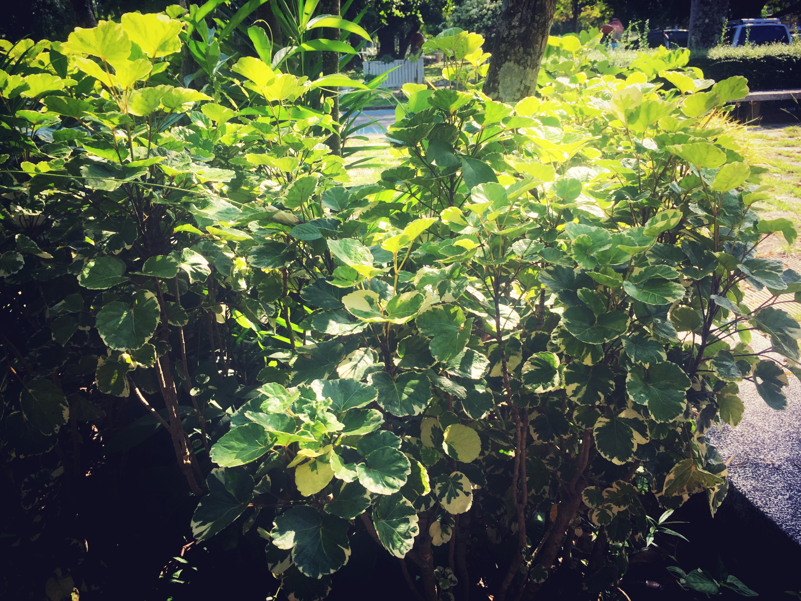

Polyscias guilfoylei (เล็บครุฑลูกไม้ขาว)
ข้อมูล
ต้นเล็บครุฑ และใบและขนาด ขึ้นอยู่กับชนิดพันธุ์ ต้นเล็บครุฑ ต้นไม้มงคล ปลูกไว้ประจำบ้านจะช่วยคุ้มครองและป้องกันภัยเพราะ ครุฑ หรือ คุตติ คือการคุ้มครองรักษาให้เกดความสงบสุขและปลอดภัย นอกจากนี้ลักษษระของใบเล็บครุฑ ยังมีลักษณะคล้ายเล็บของพญา ครุฑ ซึ่งโบราณเชื่อว่าสามารถช่วยป้องกันภัยอันตรายจากศัตรูภายนอกได้ เพื่อเป็นสิริมงคลแก่ บ้านและผู้อาศัย ควรปลูกต้นเล็บครุฑไว้ทางทิศตะวันตกเฉียงเหนือ ผู้ปลูกควรปลูกในวันอังคาร เพราะโบราณเชื่อว่าการปลูกไม้เพื่อเอาประโยชน์ทั่วไปทางใบ ให้ปลูกในวันอังคาร เล็บครุฑเป็นพรรณไม้ยืนต้น

ลักษณะ
ลำต้น เล็บครุฑทอดมัน/ครุฑตรี เป็นไม้พุ่มขนาดเล็ก สูงประมาณ 1-2 เมตร ต้นอ่อนมีสีเขียว ลำต้นแก่มีสีเทา ผิวลำต้นสากมือ ลำต้นแตกกิ่งตั้งตรงรวมกันเป็นทรงพุ่ม และมีปุ่มนูนบริเวณกาบใบที่ร่วงไป ใบเล็บครุฑทอดมัน/ครุฑตรี แตกออกจากลำต้น และกิ่ง โดยเรียงสลับกันเป็นชั้นๆ ใบเป็นใบประกอบมีก้านใบหลักยาว โคนก้านใบหลักมีตุ่มหนามเล็กๆสีขาว และถัดขึ้นมาเป็นจุดประสีขาวสลับกับสีเขียวเข้ม จากนั้น ก้านใบหลักแตกก้านใบย่อยออก ก้านใบย่อยมีใบเรียงกันเป็นคู่ตรงข้ามกัน 5-9 ใบ โดยใบสุดท้ายเป็นใบเดี่ยว ใบย่อยแต่ละใบมีลักษณะเรียวยาว ขอบใบหยักลึกหลายหยัก คล้ายกรงเล็บ ส่วนปลายใบแหลม ดอกเล็บครุฑทอดมัน/ครุฑตรี แทงออกปลายยอดของลำต้น ช่อดอกมีขนาดใหญ่ และแตกแขนงช่อย่อยจำนวนมาก แต่ละช่อมีดอกรวมกันเป็นกระจุก 20-40 ดอก ผลเล็บครุฑทอดมัน/ครุฑตรี มีลักษณะค่อนข้างกลม รวมกับหลายผลเป็นกระจุก